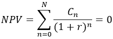

irr
This function calculates the Internal Rate of Return (IRR) for an investment where the invested sums as well as anticipated return in absolute (cash flow)
values are known. The calculation is based on the following discounted cash flow formula where the the unknown r is calculated from given cashflow figure
for periods 0 to N and the sum of the final NPV is zero (initial investments and subsequent returns balanced to 0).

In a typical investment case, at least one (the first) cash flow value is negative and the remaining values are positive to reflect the returns to achieve.
Indirect parameter passing is disabled
| No. | Type | Description |
|---|---|---|
| 1 input |
parameter set | cashflow values Set of numerals (blank literals are allowed and recognized as zero) to be discounted using the WACC value |
| Opt. 2 input |
literal | time base Accepts following three values: years, semestersquarters, and months in order to identify wheter the values provided are on an annual, quarterly or monthly base. If quarter or month are chosen, then the compound avarage growth rate will be automatically adjusted to years. Default value: years |
| Type | Description |
|---|---|
| numeral | Calculated IRR A positive value reflects good chances that the investment made is paying off. |
Input parameter set contains values of invalid type (e.g. literals)
echo( irr( {-100, 5, 105} ) ); // Returns 0.05
0.05